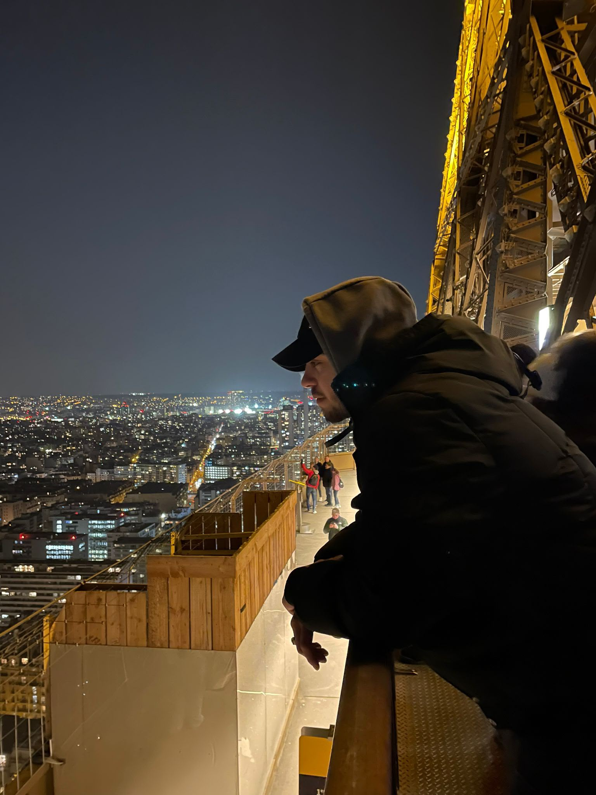
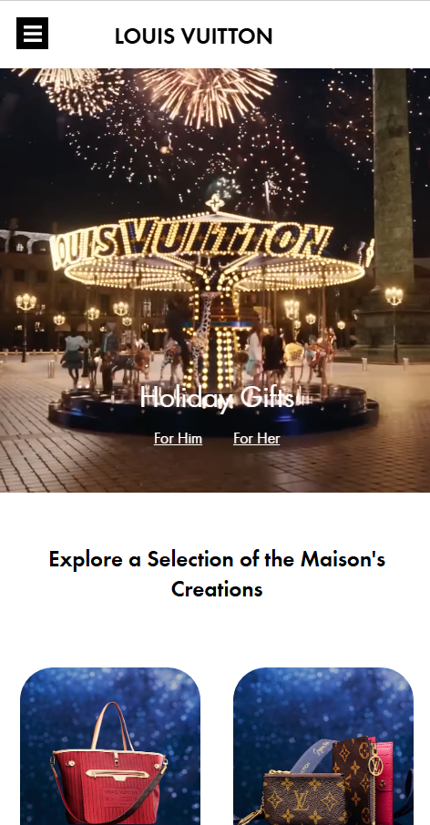

I


Hello! I'm Alex, a 24-year-old fourth-year Communication and Multimedia Design (CMD) student with a passion for UX/UI design, front-end development, and creating user-centered digital experiences. Before starting my current degree, I studied Software Development for one year at the Utrecht University of Applied Sciences (HU), which gave me a solid technical foundation that complements my design skills.
During my studies, I have worked on projects involving responsive web design, UX research, prototyping, and front-end development using HTML, CSS, JavaScript, and Adobe XD. I enjoy turning ideas into intuitive, accessible, and visually appealing digital products while continuously learning and improving my skills.
Outside of my studies, I enjoy illustrating, listening to music, discovering new things, and gaming. These hobbies inspire my creativity and curiosity, both of which influence my approach to design.
I am currently looking for an internship where I can further develop my skills, contribute to meaningful projects, and gain valuable experience in a professional environment.
Design is the discipline of attention. To make something well is to look at it longer than is comfortable.


